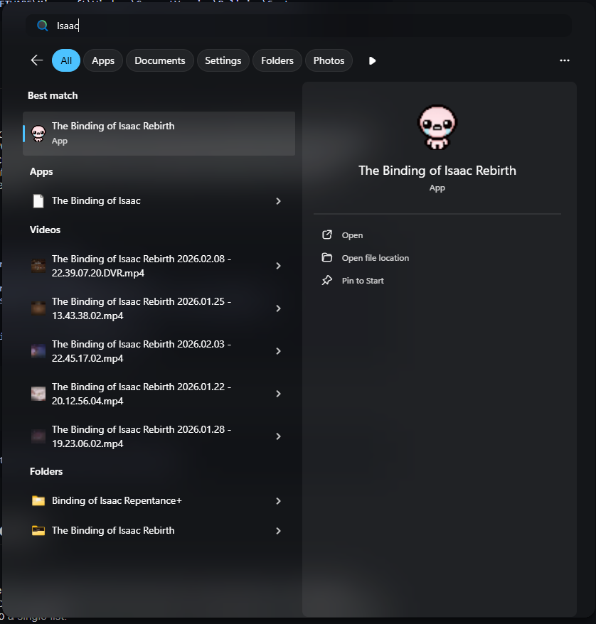
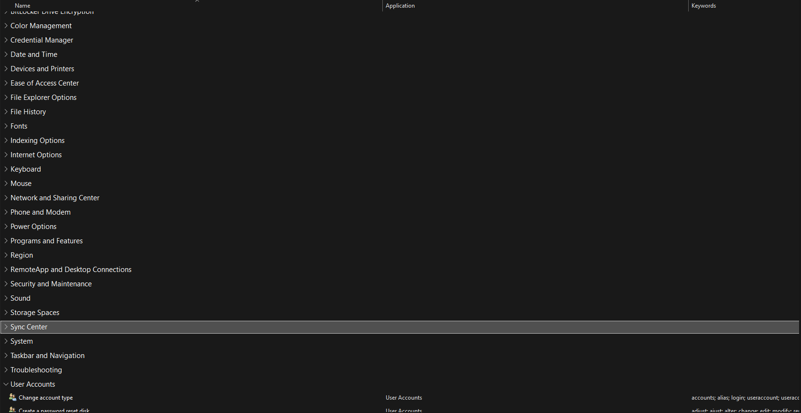
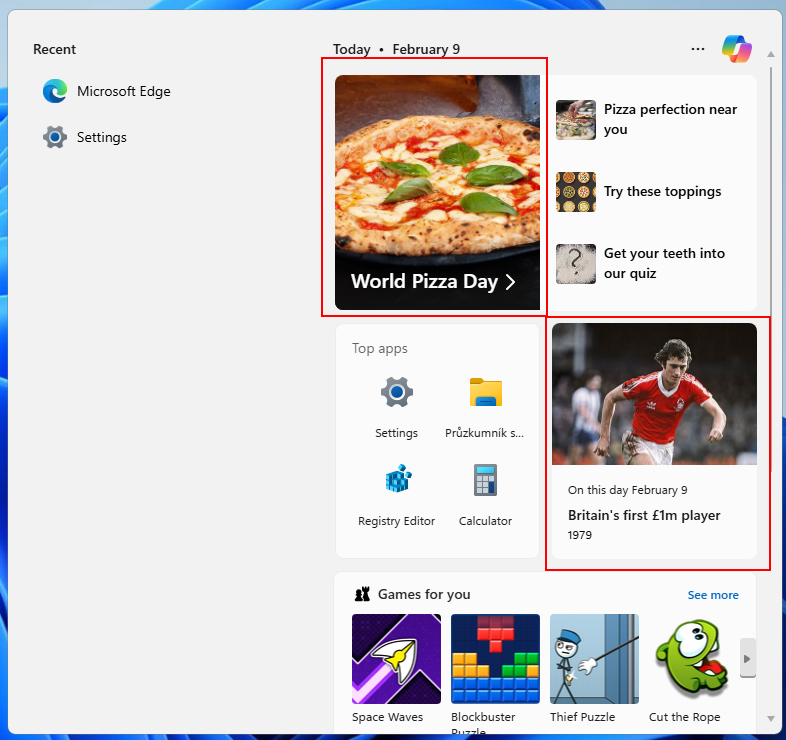
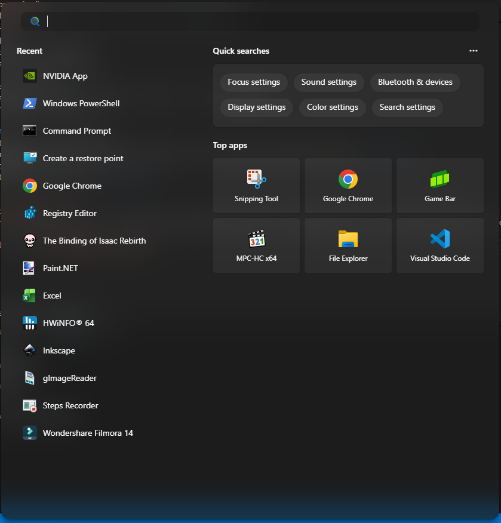
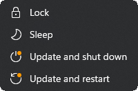
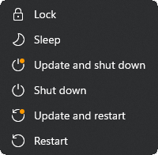
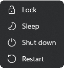

rexplorer.bat
essential explorer batchA batch file that restarts explorer.exe, because sometimes restarting explorer is necessary to apply tweaks.
Script
taskkill /im explorer.exe /f
start explorer.exe
exitStartAds.py
python start-menu adsRemoves advertisements in the start menu.
Script
#Path
key_path = r"Software\Microsoft\Windows\CurrentVersion\ContentDeliveryManager"
key = winreg.OpenKey(winreg.HKEY_CURRENT_USER, key_path, 0, winreg.KEY_SET_VALUE)
#Removing start ads
winreg.SetValueEx(key, "SystemPaneSuggestionsEnabled", 0, winreg.REG_DWORD, 0)
#Reverting the tweak (bringing ads back)
winreg.SetValueEx(key, "SystemPaneSuggestionsEnabled", 0, winreg.REG_DWORD, 1)
Affected directories
regedit:Computer\HKEY_CURRENT_USER\Software\Microsoft\Windows\CurrentVersion\ContentDeliveryManagerEndTask.py
python taskbar windows11
Enables the End Task option when right-clicking an app on the Windows 11 taskbar.
The script works by toggling an undocumented registry flag used internally
by Windows Explorer.
Script
PATH = r"Software\Microsoft\Windows\CurrentVersion\Explorer\Advanced\TaskbarDeveloperSettings"
#Applying
key = winreg.CreateKey(winreg.HKEY_CURRENT_USER, PATH)
winreg.SetValueEx(key, "TaskbarEndTask", 0, winreg.REG_DWORD, 1)
winreg.CloseKey(key)
#Reverting
key = winreg.OpenKey(winreg.HKEY_CURRENT_USER, PATH, 0, winreg.KEY_SET_VALUE)
winreg.DeleteValue(key, "TaskbarEndTask")
winreg.CloseKey(key)Affected directories
regedit:Computer\HKEY_CURRENT_USER\Software\Microsoft\Windows\CurrentVersion\Explorer\Advanced\TaskbarDeveloperSettingsLocalAccount.py
python admin windows accounts/users
A Python script to create a new local user account.
You can choose to make the user an administrator or a standard account.
Script
#Creating the account
subprocess.run(["net", "user", username, password, "/add"], check=True)
#Adding to Administrators (optional)
subprocess.run(["net", "localgroup", "Administrators", username, "/add"], check=True)
DropFileRemove.py
python explorer filesIn a recent update, Microslop added a new option for "file sharing". If you drag your file a very intrusive and annoying pop-up window will appear asking you if you want to share it to other devices. this script will remove said pop-up.
Script
PATH = r"SYSTEM\ControlSet001\Control\FeatureManagement\Overrides\14\3895955085"
#Applying
key = winreg.CreateKey(winreg.HKEY_LOCAL_MACHINE, PATH)
winreg.SetValueEx(key, "EnabledState", 0, winreg.REG_DWORD, 1)
winreg.SetValueEx(key, "EnabledStateOptions", 0, winreg.REG_DWORD, 0)
winreg.CloseKey(key)
#Reverting
key = winreg.OpenKey(
winreg.HKEY_LOCAL_MACHINE,
PATH,
0,
winreg.KEY_SET_VALUE)
winreg.DeleteValue(key, "EnabledState")
winreg.DeleteValue(key, "EnabledStateOptions")
winreg.CloseKey(key)
Affected directories
regedit:Computer\HKEY_LOCAL_MACHINE\SYSTEM\ControlSet001\Control\FeatureManagement\Overrides\14\3895955085PowerPlan.py
python powercfg windows power-plan
a Windows power plan manager.
You can create a custom power plan based on existing presets, some of which are normally not accessible to regular users.
Power Plans presets:
- Power Saving
- Balanced
- High Performance
- Ultimate Performance
Script
os.system("powercfg -duplicatescheme " + base_plan)
output = os.popen("powercfg -list").read().splitlines()
new = ""
for line in output:
if base_name in line:
new = line.split(":")[1].split("(")[0].strip()
if new != "":
os.system('powercfg -changename ' + new + ' "' + name + '"')
os.system("powercfg -setactive " + new)Affected directories
The script does not use the Windows registry, instead it uses powercfg (a command-line tool).
DeviceSetupRegion.py
python region restrictions
DeviceSetupRegion.py changes the Windows device setup region and current location.
Because Windows blocks certain features (ex. Disabling Bing search in the start menu) in certain coutries, and usually checks the "Device Setup Region" value, which you cannot change, instead of the current location. All restrictions are documented in: C:\Windows\System32\IntegratedServicesRegionPolicySet.json
Script
key = winreg.OpenKey(
winreg.HKEY_CURRENT_USER,
r"Control Panel\International\Geo",
0,
winreg.KEY_SET_VALUE)
winreg.SetValueEx(key, "Name", 0, winreg.REG_SZ, abbrev)
winreg.SetValueEx(key, "Nation", 0, winreg.REG_SZ, str(nation_id))winreg.CloseKey(key)
winreg.DeleteValue(key2, "DeviceRegion")
winreg.CloseKey(key2)
key2 = winreg.OpenKey(
winreg.HKEY_LOCAL_MACHINE,
r"SOFTWARE\Microsoft\Windows\CurrentVersion\Control Panel\DeviceRegion",
0,
winreg.KEY_SET_VALUE) Affected directories
regedit:Computer\HKEY_LOCAL_MACHINE\SOFTWARE\Microsoft\Windows\CurrentVersion\Control Panel\DeviceRegion
Computer\HKEY_CURRENT_USER\Control Panel\International\GeoDisableAdvertisementID.py
python privacy ads data-collection/telemetryDisables most Advertisement ID settings scattered throughout the privacy options.
Reduces most telemetry and data collection.
Script
path = r"Software\Microsoft\Windows\CurrentVersion\AdvertisingInfo"
path = r"Software\Microsoft\Windows\CurrentVersion\Privacy"
path = r"Software\Microsoft\Windows\CurrentVersion\ContentDeliveryManager"
path = r"Software\Policies\Microsoft\Windows\DataCollection"
#Apply
# Ad ID
key = winreg.CreateKey(winreg.HKEY_CURRENT_USER, path)
winreg.SetValueEx(key, "Enabled", 0, winreg.REG_DWORD, 0)
winreg.CloseKey(key)
# Tailored Experiences (formerly Personalized Offers)
key = winreg.CreateKey(winreg.HKEY_CURRENT_USER, path)
winreg.SetValueEx(key, "TailoredExperiencesWithDiagnosticDataEnabled", 0, winreg.REG_DWORD, 0)
winreg.CloseKey(key)
# Ad personalization
key = winreg.CreateKey(winreg.HKEY_CURRENT_USER, path)
winreg.SetValueEx(key, "SubscribedContent-338393Enabled", 0, winreg.REG_DWORD, 0)
winreg.SetValueEx(key, "SubscribedContent-353694Enabled", 0, winreg.REG_DWORD, 0)
winreg.CloseKey(key)
# Telemetry
key = winreg.CreateKey(winreg.HKEY_LOCAL_MACHINE, path)
winreg.SetValueEx(key, "AllowTelemetry", 0, winreg.REG_DWORD, 0)
winreg.CloseKey(key)
#Reverting
# Ad ID
key = winreg.CreateKey(winreg.HKEY_CURRENT_USER, path)
winreg.SetValueEx(key, "Enabled", 1, winreg.REG_DWORD, 1)
winreg.CloseKey(key)
# Tailored Experiences
path = r"Software\Microsoft\Windows\CurrentVersion\Privacy"
key = winreg.CreateKey(winreg.HKEY_CURRENT_USER, path)
winreg.SetValueEx(key, "TailoredExperiencesWithDiagnosticDataEnabled", 1, winreg.REG_DWORD, 1)
winreg.CloseKey(key)
# Ad personalization
path = r"Software\Microsoft\Windows\CurrentVersion\ContentDeliveryManager"
key = winreg.CreateKey(winreg.HKEY_CURRENT_USER, path)
winreg.SetValueEx(key, "SubscribedContent-338393Enabled", 1, winreg.REG_DWORD, 1)
winreg.SetValueEx(key, "SubscribedContent-353694Enabled", 1, winreg.REG_DWORD, 1)
winreg.CloseKey(key)
# Telemetry
path = r"Software\Policies\Microsoft\Windows\DataCollection"
key = winreg.CreateKey(winreg.HKEY_LOCAL_MACHINE, path)
winreg.SetValueEx(key, "AllowTelemetry", 3, winreg.REG_DWORD, 3)
winreg.CloseKey(key)
Affected directories
regedit:
Computer\HKEY_CURRENT_USER\Software\Microsoft\Windows\CurrentVersion\AdvertisingInfo
Computer\HKEY_CURRENT_USER\Software\Microsoft\Windows\CurrentVersion\Privacy
Computer\HKEY_CURRENT_USER\Software\Microsoft\Windows\CurrentVersion\ContentDeliveryManager
Computer\HKEY_LOCAL_MACHINE\Software\Policies\Microsoft\Windows\DataCollection
DetailedShutdown.py
python verbose diagnostics details When shutting down your computer, Windows normally shows “Shutting down” without any details.
By enabling this tweak, you can see detailed information about what the system is actually doing during the shutdown process, including any processes or tasks that might be preventing the shutdown.
Script
path = r"SOFTWARE\Microsoft\Windows\CurrentVersion\Policies\System"
#Applying
key = winreg.CreateKey(winreg.HKEY_LOCAL_MACHINE, path)
winreg.SetValueEx(key, "VerboseStatus", 0, winreg.REG_DWORD, 1)
winreg.CloseKey(key)
#Reverting
winreg.DeleteValue(key, "VerboseStatus")
Affected directories
regedit:
Computer\HKEY_LOCAL_MACHINE\SOFTWARE\Microsoft\Windows\CurrentVersion\Policies\System
LocalSearch.py
python bing start-menuPrevents Windows Search from showing online results. Most of the time, when using the Start menu, you are searching for something on your PC. Without this tweak, muscle memory and pressing enter without double checking after a search causes Microsoft Bing to open with search results for what you typed, instead of launching the app you actually wanted.. for some reason, Microsoft prioritizes Bing over local search.
This tweak disables online search entirely.
Example:
before:
after:
Script
path = r"Software\Policies\Microsoft\Explorer"
#Applying
key = winreg.CreateKey(winreg.HKEY_CURRENT_USER, path)
winreg.SetValueEx(key, "DisableSearchBoxSuggestions", 0, winreg.REG_DWORD, 1)
winreg.CloseKey(key)
#Reverting
winreg.DeleteValue(key, "DisableSearchBoxSuggestions")
Affected directories
regedit:
Computer\HKEY_CURRENT_USER\Software\Policies\Microsoft\Explorer
ControlPanelGodMode.bat
batch, ps hidden accessWindows "GodMode” is a hidden feature in Windows that creates a folder which exposes all control panel options and other administrative tools in one place. Windows settings are usually spread across different menus and apps, GodMode sorts them into a single list.
Preview:
Script
for /f "tokens=2*" %%A in ('reg query "HKCU\Software\Microsoft\Windows\CurrentVersion\Explorer\User Shell Folders" /v Desktop') do set desktop=%%B
call set desktop=%desktop%
powershell -Command "New-Item -Path '%desktop%\GodMode.{ED7BA470-8E54-465E-825C-99712043E01C}' -ItemType Directory -Force"
Affected directories
%USERPROFILE%/Desktop aka. C:/Users/YOURNAME/Desktop
RestorePoint.py
python powershell safeguard protectionA restore point in Windows is basically like a checkpoint in a game. It saves your important system files, programs, drivers, and registry settings. If something goes terribly wrong, restore points let you travel in time and roll your computer back to a previous, working state. This is basically the "oh i f*cked up" button. Honestly, even one of my scripts could potentially crash your system, keep that in mind.. not my fault tho, Microsoft has a new hobby of changing perfectly working apps so they might move some directory and everything goes crashing down.
Script
Python
#Calling PowerShell as admin to create a new restore point
script_dir = Path(__file__).resolve().parent
powershell_script = script_dir / "restorepointhelper.ps1"
subprocess.run([
"powershell",
"-ExecutionPolicy", "Bypass",
"-File", str(powershell_script)
# Removing all restore points
command = ["vssadmin", "delete", "shadows", "/for=c:", "/all", "/quiet"]
subprocess.run(command, check=True)
PowerShell
#Creating a new restore point
Checkpoint-Computer -Description "KASPAR Restore Point" -RestorePointType "MODIFY_SETTINGS" Affected directories
C:/System Volume InformationDynamic Search is basically, again, transforming the Windows Search Bar into something that isnt searching on Windows.. Shows you news you did not ask for, what "Day" it is, which is cool and all, but not in my search bar.
Example:
before:
after:
Script
#PATH "Software\Microsoft\Windows\CurrentVersion\SearchSettings"
reg_key = winreg.OpenKey(winreg.HKEY_CURRENT_USER, path, 0, winreg.KEY_SET_VALUE)
#Applying
winreg.SetValueEx(reg_key, value_name, 0, winreg.REG_DWORD, 0)
#Reverting
winreg.SetValueEx(reg_key, value_name, 0, winreg.REG_DWORD, 1)
Affected directories
regedit:Computer\HKEY_CURRENT_USER\Software\Microsoft\Windows\CurrentVersion\SearchSettingsShutdownAndDontUpdate.py
python windows-update forced-updatesBrings back the "Shutdown and Restart" options in the start menu, even if theres an update pending. Also allows you to disable the update option entirely.
Example:
Forced update (original behavior)
Both options (Recommended)
No update options
Script
#PATH "SOFTWARE\Microsoft\WindowsUpdate\Orchestrator"
#Shutdown, Restart + Update & Shutdown, Update & Restart
key = winreg.OpenKey(winreg.HKEY_LOCAL_MACHINE,path,0,winreg.KEY_SET_VALUE | winreg.KEY_WOW64_64KEY)
winreg.SetValueEx(key, "ShutdownFlyoutOptions", 0, winreg.REG_DWORD, 0xF)
winreg.CloseKey(key)
#Forced updates (Original Behavior)
winreg.SetValueEx(key, "ShutdownFlyoutOptions", 0, winreg.REG_DWORD, 0xA)
winreg.CloseKey(key)
#Removing update options entirely
winreg.SetValueEx(key, "ShutdownFlyoutOptions", 0, winreg.REG_DWORD, 0x0)
winreg.CloseKey(key)
Affected directories
regedit:Computer\HKEY_LOCAL_MACHINE\SOFTWARE\Microsoft\WindowsUpdate\OrchestratorLocalAccountDuringInstallation / KasparNRO
cmd-script windows oobe local-accountAbout
This script allows you to install Windows without needing an internet connection.
Made with love to make the installation process faster and less painful.
It creates a local account during setup for you.
Your name will be set to KASPAR.
How to use
Go through the installation process normally.
Right when you get to this step (OOBE):
Press Shift+F10 on your keyboard. A Command Prompt window will popup.
Type in: curl -L tinyurl.com/kasparnro -o local.cmd and confirm with Enter.
A download process will begin. After it finishes (usually a second or two), type local.cmd.
Your computer will automatically restart. Once Windows boots up again, answer the region questions.
The local account will already be created for you.
Changing the Local Account Name
After installation, you can change the local account’s display name:
- Press Win + R
- Type:
netplwiz - Select your local account → Properties → rename it
How this works:
- CURL = transfers/downloads data from a server, where the script is hosted (GitHub, shortened via TinyURL).
- -L is a flag that tells CURL to follow redirects, which is needed because TinyURL redirects to raw.githubusercontent.com.
tinyurl.com/kasparnro->https://raw.githubusercontent.com/tomandesMSH/KASPAR/main/scripts/LocalAccountDuringInstallation/script.cmd
(NRO/BypassNRO was a command that did the same, but Microsoft abandoned it in March 2025.)- -o local.cmd tells CURL to save the downloaded file as "local.cmd". You can change the name if you want.
local.cmdruns the cmd file you just downloaded.